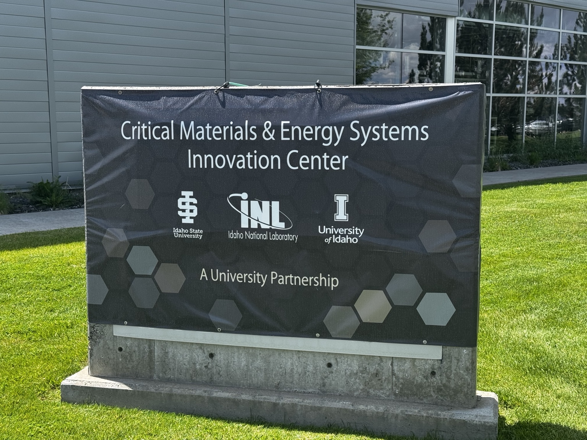
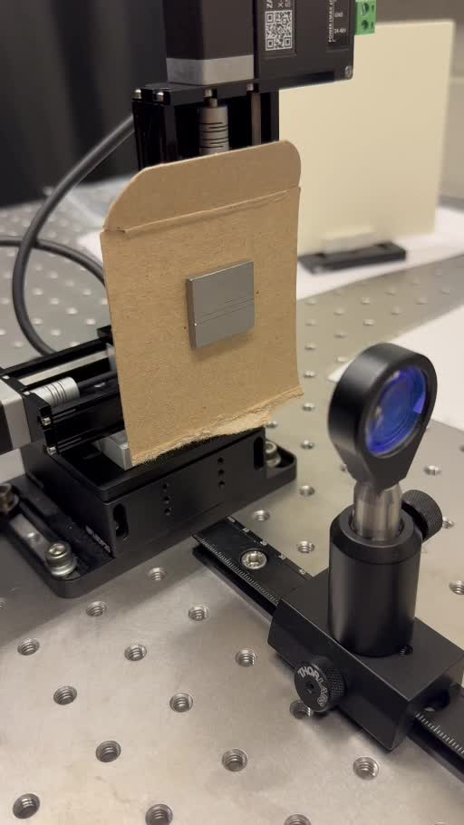
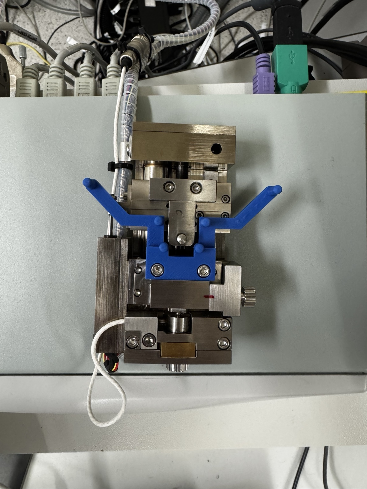

Sep–Dec 2026
First Solar
Thin Film Material Development Intern · Perrysburg, OH
PVD coating development and metrology analysis for perovskite solar-cell materials.
I’m a Chemical Engineering student at Oregon State University working on nuclear materials, energy systems, and experimental hardware.


Sep–Dec 2026
Thin Film Material Development Intern · Perrysburg, OH
PVD coating development and metrology analysis for perovskite solar-cell materials.
Jun–Aug 2026

NSF-supported research internship
Research Intern · University of Idaho / Idaho State University / Idaho National Laboratory
High-temperature molten-salt testing, post-test characterization, and power-failure and overtemperature safety-system work.
Sep 2025–Present

Research Assistant
Graphite specimen preparation, testing-fixture development, nuclear-material characterization, and tungsten laser notching. Additional characterization work includes UO₂ fission-gas-release research using STA, SEM, and XRD.
Oct 2025–Present
Research Assistant
Thermochemical storage experiments and reactor development; successful $4,000 research proposal.
Prior internship
Civil Engineering Intern
AutoCAD, GIS, infrastructure documentation, and an adopted water-retention curb standard.

FLiNaK corrosion of LPBF 316LInternships
Laser notching for tungsten fracture testsResearch
Stable crack propagation in nuclear graphiteResearch